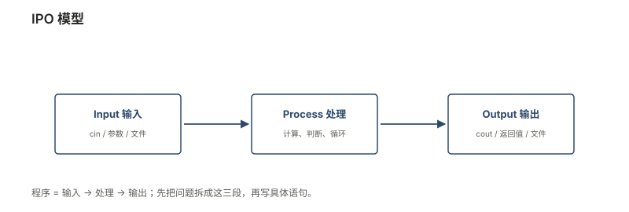
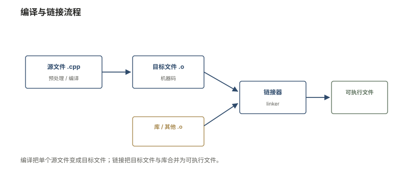

SOE105 · 第 2 章
程序设计导论：IPO、语言与编译
Introduction to Programming
虚线下划线为术语；悬停查看中文、英文与释义，完整词典见“术语”。
本章目录
本讲从“计算机能做什么”出发，建立输入—处理—输出（IPO）模型，说明编程的本质是把人类语言的问题逐层变换为机器可执行的指令，并给出 C/C++ 从源文件到可执行文件的完整路径。
本章要点
- 计算等价性：所有计算机在时间与内存充足时能算同样的东西，更快的机器只是算得更快。
- 问题变换：人类语言描述的问题可以经多层抽象，系统性地变换为计算机可理解的形式。
- IPO 模型把程序看作黑箱：输入经处理转为输出，过程中可读写存储。
- 编程是用机器可理解的语言告诉计算机做什么；计算机只会无条件执行被明确告知的指令。
- C/C++ 的三项优势：效率、可移植性、对硬件的直接控制。
- 编译把源文件变成目标文件，链接器再把目标文件与库合成可执行文件。
- 头文件与库提供的是声明（declaration），不是定义（definition）。
- Java 先编译为字节码再由 JVM 执行，因此是平台无关程序；C/C++ 的可执行文件与平台绑定。
2.1 计算的两个基本命题
讲义引用 Patt 与 Patel（2005）提出的两个概念作为全课程的出发点。
其一是计算等价性computational equivalence：只要有足够的时间与内存，所有计算机能计算的东西是相同的；更快或更贵的机器只能把同一件计算做得更快，而不能解决慢机器根本无法解决的问题。这条命题把“算法是否可行”与“机器是否够快”分开：前者是算法问题，后者是工程问题。
其二是问题变换problem transformation：用人类语言表达的问题，可以被系统性地变换为计算机能理解的形式，中间经过多层抽象，从数学基础一直到实际实现。这门课的大部分内容，就是这条变换链上的若干层：问题 → 算法 → 源码 → 机器指令。
L01 p.2
2.2 输入—处理—输出模型
输入—处理—输出模型input-process-output model（IPO）是程序的“鸟瞰图”：程序是一个黑箱（black box），输入进入黑箱，被处理后变成输出。讲义用一句问候作例子——输入“Hi Bob! How are you?”，程序处理后输出相应回应。
在计算的语境里，IPO 还要加上存储（storage）：输入被处理并转换为输出，中间结果与数据可以写入存储、再从存储读回。这也解释了为什么后面讲变量时要讲“内存刻画”——变量的本质是存储中的一格，有地址、有类型、有当前值。

绘图提示词
Clean vector diagram of the input-process-output model: a rectangular black box labelled Program in the centre, an arrow labelled Input(s) entering from the left, an arrow labelled Output leaving to the right, and a vertical two-way arrow labelled Storage attached below the box. Flat 2D, thin 1.5 px strokes, muted slate blue and warm grey palette, white background, English labels, no cartoon, no gradient, no shadow.
IPO 的价值在于它把“写程序”变成了三个可分别回答的问题：输入是什么、要输出什么、中间要做什么处理。分析任何一道编程题，都可以先填这三格，再谈语法。
L01 p.3–4
2.3 什么是编程，什么是程序
讲义先泼了一盆冷水：计算机是很笨的机器，因为它只做被明确告知的事，且是无条件地做（unconditionally），别的一概不做。因此要用计算机解决问题，必须把解法表达成“这台特定计算机的指令”。编程programming因此被定义为：用机器可理解的语言，告诉计算机按我们的意愿做事。
由此得到程序program的定义：程序是用编程语言创造的产物（artifact），用来完成特定任务，即把输入（数据，data）转换为输出（信息，information）；它也可能承担用户与底层硬件之间的交互界面。
“数据”与“信息”的区分值得注意：数据是原始的输入，信息是经过处理、对人有意义的结果。同一个整数 27，作为输入是数据，作为“27 名学生”的输出就是信息。
L01 p.5, p.7
2.4 为什么是 C 与 C++
讲义给出 C/C++ 流行的三项原因，也是这门课选它们作载体的理由：
- 效率（efficiency）：允许对程序做细调，写出贴近硬件的实现；
- 可移植性（portability）：用 C/C++ 写的程序可以重新编译，运行在各种计算机系统与微控制器上；
- 对硬件的直接控制（direct control over computer hardware）：可以直接操作内存与设备，这在操作系统、嵌入式与高性能场景中不可替代。
三项优势彼此制约：越贴近硬件，越依赖平台；越追求效率，越需要程序员自己管理细节。后面的“平台相关性”与“指针与动态内存”两章，都是这三项优势的代价。
讲义同时提醒：语言只是工具，课程真正训练的是把问题拆解、把步骤写清楚、把错误定位出来的能力。换一门语言，这套能力仍然可用。
L01 p.7
2.5 从问题到可执行软件的分层
讲义用一张分层图描述软件的实现路径：最上方是“问题”，接着是算法algorithm（用自然语言或伪代码描述），再往下是源代码source code（用高级编程语言写），经编译或解释后成为机器指令，最后落到机器架构（指令集）、电路与器件。
每一层都在回答不同的问题：问题层问“我要解决什么”“已知什么”“输入输出是什么”“有哪些约束”；算法层把这些答案组织成步骤；源码层把步骤写成可编译的文本；机器层把文本变成电信号。讲义标注“我们的重点”（Our focus）落在算法与源码这两层。
分层的好处是每层可以独立修改：换一种算法，源码要重写但问题不变；换一台机器，源码大体不变但编译产物要重来。
L01 p.10
2.6 算法：从食谱到伪代码
讲义用“和面做面包”的食谱类比算法：先做准备工作（洗手、找食谱、备料、摆好器具），再和面（混合、发酵、揉面），然后烘烤（开烤箱、查温度、放入模具、等待），最后取出冷却。食谱的每一步都是明确的动作，顺序不能随意调换——这就是算法与“大概想法”的区别。
讲义引用《The Penguin Dictionary of Computers》的定义：算法是为解决某个特定问题而设的一系列指令或过程性步骤（a series of instructions or procedural steps for the solution of a specific problem）。定义里有三个关键词：特定问题、步骤、顺序。
在课程中，算法通常先用自然语言或伪代码pseudocode写出，再翻译成 C/C++。伪代码不是真正的程序，它只保留“做什么”，暂时不关心语法细节；这样可以在写代码之前先检查逻辑。
L01 p.11–12
2.7 编译流程：源文件、目标文件与链接
创建一个可运行的 C/C++ 程序要经过四步。
第一步，写源文件source file：helloworld.c 或 helloworld.cpp，本质是一个文本文件。第二步，编译器compiler做两件事——找出违反语言规则的语法错误（syntax error），并把高级语言程序翻译成机器语言程序。若有错误，输出的是错误列表，而不是目标文件。
第三步，得到目标文件object file（helloworld.o）。它是中间产物，除了机器码，还含有汇编代码、符号表、重定位信息、链接信息与调试信息等数据与元数据。第四步，链接器linker把多个目标文件与外部程序（库、其他共享组件）合并成一个可执行文件（helloworld 或 helloworld.exe）。可执行文件里是一组编码后的指令，面向特定计算机系统，因此是平台相关的；最后由处理器执行这些指令、完成计算，把输入变成输出。
讲义特别指出：头文件与库提供的是函数、变量与宏的声明（declarations），不是定义（definitions）。声明告诉编译器“这个名字长什么样”，定义才给出实际实现；链接阶段要找的正是定义，所以漏掉库或写错库名会在链接期报错，而不是编译期。

绘图提示词
Clean vector pipeline diagram of the C/C++ build process from left to right: source file helloworld.cpp, compiler box, object file helloworld.o, linker box with header files and libraries feeding in from above, executable file, processor, monitor output. Label the compiler with syntax error checking and translation, and the linker with combining object files and libraries. Flat 2D, thin 1.5 px strokes, muted slate blue and warm grey palette, white background, English labels, no cartoon, no gradient, no shadow.
L01 p.13–14
2.8 平台相关性与平台无关程序
每种编程语言都有自己的专用编译器：main.c/main.cpp 交给 C/C++ 编译器，main.rs 交给 Rust 编译器，main.go 交给 Go 编译器。不能拿一个 Rust 文件用 Go 或 C 编译器去编译——语言与编译器是一一对应的。
为某个操作系统写的软件，不一定能在该系统支持的所有架构上自动运行，通常需要针对每个操作系统与硬件重新编译（recompilation）。为了兼顾兼容性与功能性，许多软件系统采用分层架构，把平台相关的代码限制在最上层与最下层，中间层保持中立。
与之相对，平台无关程序platform independent program指几乎不需修改就能在多种硬件平台或软件架构上运行的程序。讲义以 Java 为例：HelloWorld.java 经 Java 编译器编译为 HelloWorld.class，即字节码bytecode，再由Java 虚拟机Java Virtual Machine（JVM）执行。
字节码不是中央处理器（CPU）的机器语言，可以看成“JVM 的机器语言”。JVM 是一个读取字节码指令并边读边执行的程序，充当 Java 语言与底层硬件之间的解释器，为 Java 应用提供可在不同平台上运行的运行时环境（runtime environment）。Groovy、Kotlin、Scala 也先编译为字节码再跑在 JVM 上。
L01 p.15–18
2.9 CLI、CIL 与跨界编译
讲义还介绍了另一条平台无关路线：公共语言基础设施Common Language Infrastructure（CLI），主要由 Microsoft 开发。它用一套代码描述与运行时环境，让多种高级语言无需为特定架构重写就能在不同平台上使用。
其流程是：C#、VB.NET、F# 等 .NET 兼容语言先由各自的编译器编译为第二种平台中立语言——公共中间语言Common Intermediate Language（CIL）；再由平台相关的公共语言运行时Common Language Runtime（CLR）把 CIL 编译为当前平台可执行的机器码。结构上与 JVM 路线同构：源码 → 中间语言 → 平台运行时 → 机器码。
最后讲义提出一个反问：C++ 程序能编译后跑在 JVM 上吗？答案是技术上可以，但要绕道——用 NestedVM，先用 GCC（GNU Compiler Collection）把源码编译成 MIPS 二进制，再翻译为 Java class 文件。这个例子说明“平台无关”不是语言的固有属性，而是工具链选择的结果。
L01 p.19–20